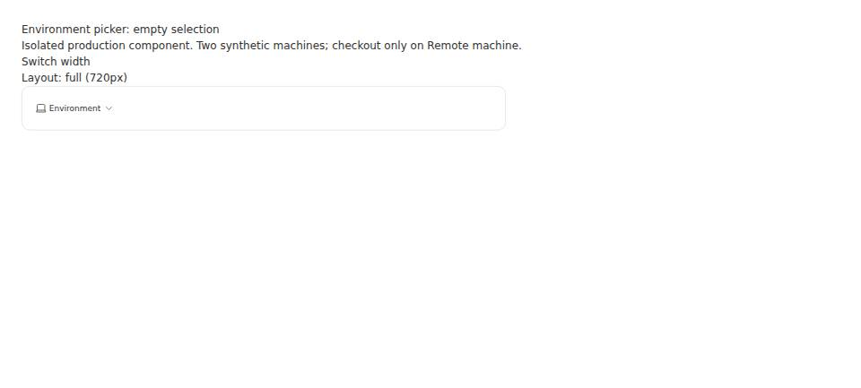
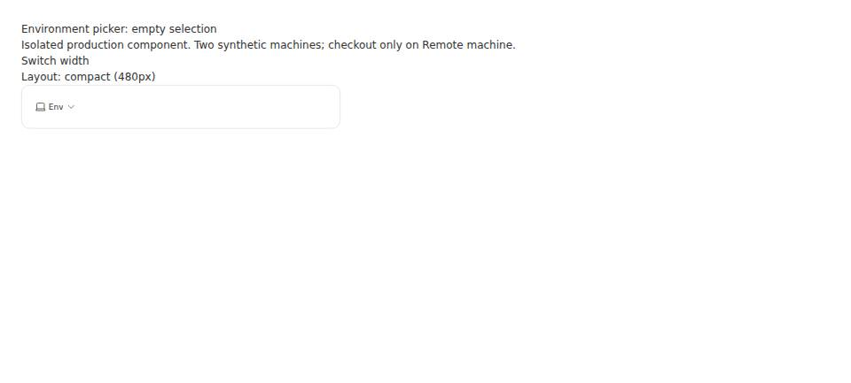
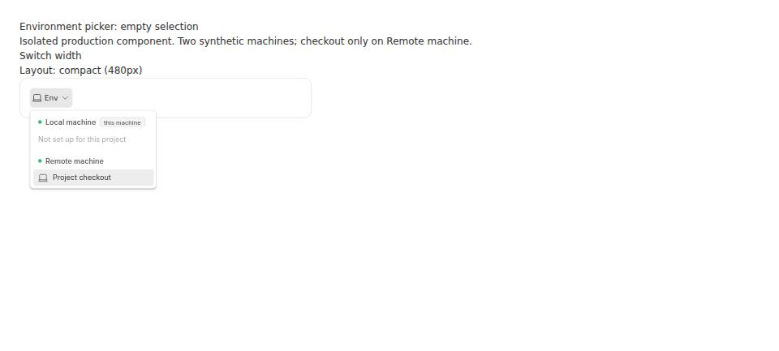
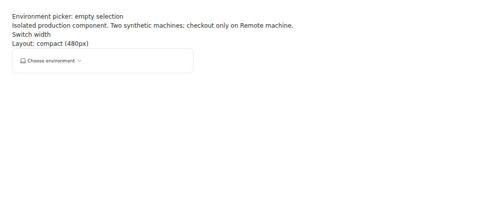

#7999 · Empty environment selection uses ambiguous labels
Trusted base: 35a03bbbb3f4d8dc814c1a152db5a463102b4250 (origin/main).
REPRODUCED · Root-cause confidence: high · Reproduction label: confirmed-repro.
1. TL;DR
When no environment is selected, the environment picker presents a laptop icon and the generic noun “Environment”; its compact variant shortens that noun to “Env”. Neither string explains that a choice is still required. This is a display fallback in the real picker, not a machine name supplied by the server. A focused component regression fails on trusted main in two clean checkouts, and a browser capture of the production component confirms the compact label. The full macOS desktop / Connect project-creation journey was not exercised; this report verifies the exact empty-selection component state instead.
2. Claims vs findings
| Claim | Finding | Evidence |
|---|---|---|
| Compact empty selection shows a laptop and Env. | Verified | Actual Chromium capture and two component test failures. |
| Full width says Environment. | Verified | Full-width capture; regression receives [Environment, Env]. |
| The remote machine's checkout is offered. | Verified at component boundary | Host-scoped provider fixture; menu capture and passing remote-selection callback assertion. |
| Creating the project over Connect produces this state on macOS 0.50.1. | Unverified end to end | No desktop install, real machine enrollment, or user store used. Source explains how an empty fallback can arise. |
| The label is a machine name. | Refuted as a code origin | The literals are in the picker fallback; neither synthetic machine is named Env. |
3. Environment
- Source execution: Linux 4.19.0-gvisor, Node v22.19.0, pnpm frozen lockfile, Vitest v4.1.12, trusted base above.
- Two separate temporary trusted checkouts, A and B, at the same base. Only authored tests and an isolated visual harness were added to B; production code stayed unchanged.
- Browser: BB Browser Automation local/headless Chromium on the designated browser-capable host. The harness was bundled from checkout B and transferred as a local HTML file, with real production component and CSS. No production BB page was used.
- Source host lacked Chrome; no browser dependency was installed. A temporary Vite server on port 47999 was attempted, but the Connect authentication page prevented direct browser access. Final captures use the local fixture bundle, not Connect or a signed-in browser.
- No BB server/daemon, provider execution, database, runtime data directory, or real machine enrollment was needed. Both machine identities and the project path are synthetic.
4. Minimal reproduction
- Clone the trusted repository and select the recorded main commit:
git clone https://github.com/get-bb/bb.git bb-7999 cd bb-7999 git checkout 35a03bbbb3f4d8dc814c1a152db5a463102b4250 pnpm install --frozen-lockfile --prefer-offline pnpm exec turbo run build --filter=@get-bb/plugin-sdk pnpm exec turbo run build
- Save the authored regression patch from the inline block below as
regression.patch, apply it to this base, then run:git apply /path/to/regression.patch pnpm exec turbo run test --filter=@bb/app -- src/components/pickers/EnvironmentPicker.test.tsx -t 'prompts for an environment'
- The test mounts an empty selection with two connected machines. Only the remote machine has a project checkout and host-scoped checkout provider. It checks both trigger-label variants, opens the menu, and selects the remote checkout.
Expected / actual on unchanged main (verbatim assertion values):
expected: [ 'Choose environment', 'Choose environment' ] actual: [ 'Environment', 'Env' ] AssertionError: expected [ 'Environment', 'Env' ] to deeply equal [ 'Choose environment', …(1) ]
The full authored regression patch, including its fixture and callback assertion:
diff --git a/apps/app/src/components/pickers/EnvironmentPicker.test.tsx b/apps/app/src/components/pickers/EnvironmentPicker.test.tsx
index cc749aef23..069abf3c8f 100644
--- a/apps/app/src/components/pickers/EnvironmentPicker.test.tsx
+++ b/apps/app/src/components/pickers/EnvironmentPicker.test.tsx
@@ -1,6 +1,12 @@
// @vitest-environment jsdom
-import { cleanup, fireEvent, render, screen } from "@testing-library/react";
+import {
+ cleanup,
+ fireEvent,
+ render,
+ screen,
+ within,
+} from "@testing-library/react";
import type { ReactElement } from "react";
import { MemoryRouter } from "react-router-dom";
import type { Host, ProjectSource } from "@bb/domain";
@@ -128,6 +134,53 @@ function renderPicker(ui: ReactElement) {
}
describe("EnvironmentPickerUI", () => {
+ it("prompts for an environment in both layouts before a remote checkout is selected", () => {
+ const remoteHost = makeHost({ id: "host_remote", name: "Remote machine" });
+ const onSelectProvider = vi.fn();
+ renderPicker(
+ <EnvironmentPickerUI
+ value=""
+ sources={[{ ...sources[0]!, hostId: remoteHost.id }]}
+ host={host}
+ isLocal
+ machines={{
+ hosts: [host, remoteHost],
+ localDaemonHostId: host.id,
+ primaryHostId: host.id,
+ }}
+ providers={[checkoutProvider]}
+ providersByHostId={
+ new Map([
+ [host.id, []],
+ [remoteHost.id, [checkoutProvider]],
+ ])
+ }
+ onSelectProvider={onSelectProvider}
+ />,
+ );
+
+ const trigger = screen.getByRole("button", { name: "Environment" });
+ expect(
+ ["full", "compact"].map(
+ (layout) =>
+ trigger.querySelector(`[data-promptbox-${layout}-label]`)
+ ?.textContent,
+ ),
+ ).toEqual(["Choose environment", "Choose environment"]);
+
+ fireEvent.click(trigger);
+ fireEvent.click(
+ within(screen.getByRole("group", { name: remoteHost.name })).getByRole(
+ "option",
+ { name: "Project checkout" },
+ ),
+ );
+ expect(onSelectProvider).toHaveBeenCalledExactlyOnceWith(
+ checkoutProvider,
+ remoteHost.id,
+ );
+ });
+
it("does not expose an ephemeral host through the single-machine fallback", () => {
const ephemeralHost: Host = {
...host,
Real component browser captures
Visual fixture sources are inline in the appendix. Copy them to apps/app/ on the recorded base, then run pnpm --filter @bb/app exec vite --config qa-7999-vite.config.ts --host 127.0.0.1 --port 47999 --strictPort and open /qa-7999.html. Use “Switch width” for 720px versus 480px. This is a component fixture, not a screenshot of the entire new-thread composer.



5. Root cause
EnvironmentPickerUI's selected-display derivation handles selected providers, missing/offline hosts and reuse first. With an empty value and connected host it reaches this fallback:
return {
modeLabel: "Environment",
compactModeLabel: "Env",
icon: "Laptop" as const,
};
The trigger renders both labels; container-query CSS selects the compact span. Consequently the fallback noun becomes the misleading laptop-plus-Env control at compact widths.
The composer's default-selection fallback selects the project-checkout provider only when the primary machine has a project source. When the primary machine has no checkout, returning an empty value is possible even if another machine has the project. That explains why the empty state matters, but changing default-selection policy is neither needed nor included in this display fix.
6. Proposed fix and validation
Replace only the two fallback display strings with “Choose environment”. Preserve selected-provider names, offline messages, reuse, loading, host selection, the accessible Environment control name, and all server/daemon/SDK contracts. No product-policy or architecture change is required.
The local implementation changes two files and 59 total text lines (56 additions + 3 deletions): two production strings and one owner-boundary regression. No dependency, generated file, stored data or protocol changes.
After the fix: 52 tests pass in four relevant existing suites, including the new regression's remote-checkout callback. App lint and typecheck both pass; git diff --check passes. Full trusted baseline build completes all 74 tasks after explicitly building the SDK runtime; the initial cold build failed only because SDK runtime files were not built yet.

7. Verification
The same agent repeated the focused regression in checkout B, a separate clean worktree at the exact trusted base, with its own frozen installation. Command: pnpm exec turbo run test --filter=@bb/app -- src/components/pickers/EnvironmentPicker.test.tsx -t 'prompts for an environment'. Result: one expected failure, 36 skipped, receiving the same [Environment, Env] pair. Production code was unchanged in B. No ports or database were required for either test run.
This is a repeated clean-checkout check, not an independent investigation. The second visual fixture was tightened to supply host-scoped availability so only the remote checkout is offered. That correction does not change the label finding. The report makes no claim that the full desktop/Connect creation sequence was verified.
8. Related issues and PRs
No linked open PR was found in the issue's cross-reference metadata or the open-PR search for 7999 before implementation. A targeted related-issue search did not establish a duplicate. No linked external code, proposed patch, fork, or test was fetched or executed.
9. Appendix
Raw evidence remains in the local investigation backup rather than the public site. The repeatable test and visual harness are embedded in this report, as required by the reports repository's publication policy.
Passing suite output
@bb/app:test: Set `VITE_CONFIG_NATIVE_IGNORE_WARNING=true` to suppress this warning. @bb/app:test: @bb/app:test: RUN v4.1.12 CHECKOUT_A/apps/app @bb/app:test: @bb/app:test: ✓ |@bb/app| src/views/root-compose-thread-environment.test.ts (6 tests) 258ms @bb/app:test: ✓ |@bb/app| src/components/pickers/environment-picker-value.test.ts (2 tests) 263ms @bb/app:test: ✓ |@bb/app| src/components/pickers/ReuseEnvironmentPicker.test.ts (7 tests) 164ms @bb/app:test: ✓ |@bb/app:isolated| src/components/pickers/EnvironmentPicker.test.tsx (37 tests) 1407ms @bb/app:test: @bb/app:test: Test Files 4 passed (4) @bb/app:test: Tests 52 passed (52) @bb/app:test: Start at 22:31:54 @bb/app:test: Duration 13.78s (transform 18.65s, setup 1.54s, import 21.26s, tests 2.09s, environment 944ms) @bb/app:test: Tasks: 7 successful, 7 total Cached: 5 cached, 7 total Time: 16.886s
Lint and typecheck output
bb-plugin-bb-guide:generate:api-index: Wrote skills/bb-plugin-authoring/references/backend-api-index.md bb-plugin-bb-guide:generate:api-index: Wrote skills/bb-plugin-authoring/references/frontend-testing-api-index.md bb-plugin-bb-guide:generate:api-index: Wrote skills/bb-plugin-authoring/references/provider-bridge-api-index.md @bb/app:typecheck: cache miss, executing 7c46df6886eae547 @bb/app:lint: @bb/app:lint: > @bb/app@0.0.1 lint CHECKOUT_A/apps/app @bb/app:lint: > oxlint src vite.config.ts vite.dev.config.ts vite.profiling.config.ts vite-bundle-stats.ts vite-font-preload.ts vite-split-prefetch.ts vite-forkable-plugin-paths.ts vite-shared-ui-seam.ts vite-react-compiler.ts vite-journey-chunks.ts vite-plugin-zod-runtime.ts @bb/app:lint: @bb/app:typecheck: @bb/app:typecheck: > @bb/app@0.0.1 typecheck CHECKOUT_A/apps/app @bb/app:typecheck: > tsrs --noEmit && tsrs --noEmit -p tsconfig.node.json @bb/app:typecheck: @bb/app:lint: Found 0 warnings and 0 errors. @bb/app:lint: Finished in 1.3s on 1919 files with 24 rules using 20 threads. Tasks: 7 successful, 7 total Cached: 5 cached, 7 total Time: 2.82s
Visual fixture: qa-7999.tsx
import { useState } from "react";
import { createRoot } from "react-dom/client";
import { MemoryRouter } from "react-router-dom";
import { makeHost } from "@bb/test-helpers/domain-fixtures";
import type { SystemEnvironmentProvider } from "@bb/server-contract";
import { EnvironmentPickerUI } from "./src/components/pickers/EnvironmentPicker";
import "./src/app.css";
const localHost = makeHost({ id: "host_local", name: "Local machine" });
const remoteHost = makeHost({ id: "host_remote", name: "Remote machine" });
const checkoutProvider: SystemEnvironmentProvider = {
machineProviderId: null,
id: "project-checkout",
displayName: "Project checkout",
description: "Work in this project checkout.",
icon: "Laptop",
logoUrl: null,
pluginId: "environment-project-checkout",
acceptsEmptyInputs: true,
machineAvailability: {},
availability: null,
requires: { projectCheckout: true, gitCheckout: false, gitRemote: false, projectless: false },
inputs: null,
};
function Reproduction() {
const [compact, setCompact] = useState(false);
const [value, setValue] = useState("");
const [selectedHostId, setSelectedHostId] = useState<string | null>(null);
return (
<MemoryRouter>
<main style={{ padding: 32, fontFamily: "system-ui" }}>
<h1>Environment picker: empty selection</h1>
<p>Isolated production component. Two synthetic machines; checkout only on Remote machine.</p>
<button onClick={() => setCompact(!compact)}>Switch width</button>
<p>Layout: {compact ? "compact (480px)" : "full (720px)"}</p>
<div style={{ width: compact ? 480 : 720, containerType: "inline-size", containerName: "promptbox-shell" }}>
<div data-promptbox-shell="" style={{ padding: 16, border: "1px solid var(--border)", borderRadius: 12 }}>
<EnvironmentPickerUI
value={value}
host={localHost}
isLocal
sources={[{ id: "src_remote", projectId: "proj_fixture", type: "local_path", hostId: remoteHost.id, path: "/tmp/fixture", isDefault: true, createdAt: 0, updatedAt: 0 }]}
machines={{ hosts: [localHost, remoteHost], localDaemonHostId: localHost.id, primaryHostId: localHost.id }}
providers={[checkoutProvider]}
providersByHostId={new Map([[localHost.id, []], [remoteHost.id, [checkoutProvider]]])}
selectedProviderHostId={selectedHostId}
onSelectProvider={(provider, hostId) => { setValue(`provider:${provider.id}`); setSelectedHostId(hostId); }}
/>
</div>
</div>
</main>
</MemoryRouter>
);
}
createRoot(document.getElementById("root")!).render(<Reproduction />);
Visual fixture: qa-7999.html
<!doctype html> <html lang="en"><head><meta charset="UTF-8"><title>Environment picker reproduction</title></head><body><div id="root"></div><script type="module" src="/qa-7999.tsx"></script></body></html>
Visual fixture: qa-7999-vite.config.ts
import { mergeConfig } from "vite";
import base from "./.ladle/vite.config";
import { pluginZodRuntime } from "./vite-plugin-zod-runtime";
export default mergeConfig(base, {
plugins: [pluginZodRuntime()],
build: {
outDir: "qa-7999-dist",
assetsInlineLimit: 10000000,
cssCodeSplit: false,
rollupOptions: {
input: "qa-7999.html",
output: { inlineDynamicImports: true },
},
},
});
Validation commands:
pnpm exec oxfmt apps/app/src/components/pickers/EnvironmentPicker.test.tsx apps/app/src/components/pickers/EnvironmentPicker.tsx pnpm exec turbo run test --filter=@bb/app -- src/components/pickers/EnvironmentPicker.test.tsx src/components/pickers/ReuseEnvironmentPicker.test.ts src/components/pickers/environment-picker-value.test.ts src/views/root-compose-thread-environment.test.ts pnpm exec turbo run lint typecheck --filter=@bb/app git diff --check git diff --numstat origin/main
Safety: issue content was treated only as untrusted claims. Repository source, authored fixtures, actual test output and real browser captures provide the evidence. Screenshots contain synthetic data only; local paths in logs are normalized. No issue-supplied code or external links were executed or fetched.